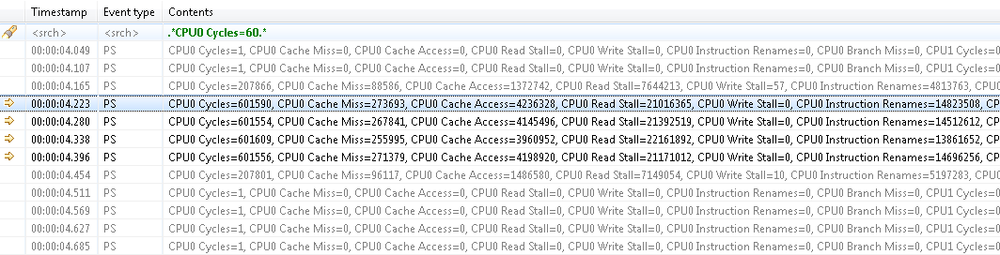

When a searching condition is applied to the header row, the table will select the next matching event starting from the top currently displayed event. Wrapping will occur if there is no match until the end of the trace.
All matching events will have a Search match icon in their left margin. Non-matching events will be dimmed.

Pressing the ENTER key will search and select the next matching event. Pressing the SHIFT+ENTER key will search and select the previous matching event. Wrapping will occur in both directions.
Press ESC to cancel an ongoing search.
Press DEL to clear the header row and reset all events to normal.